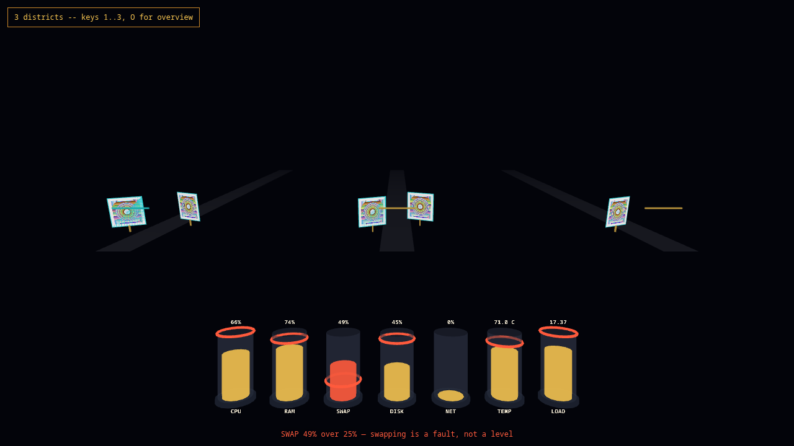
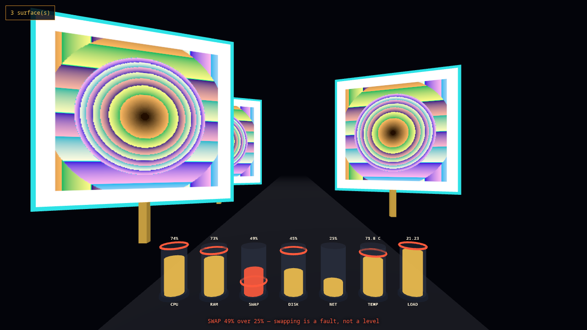
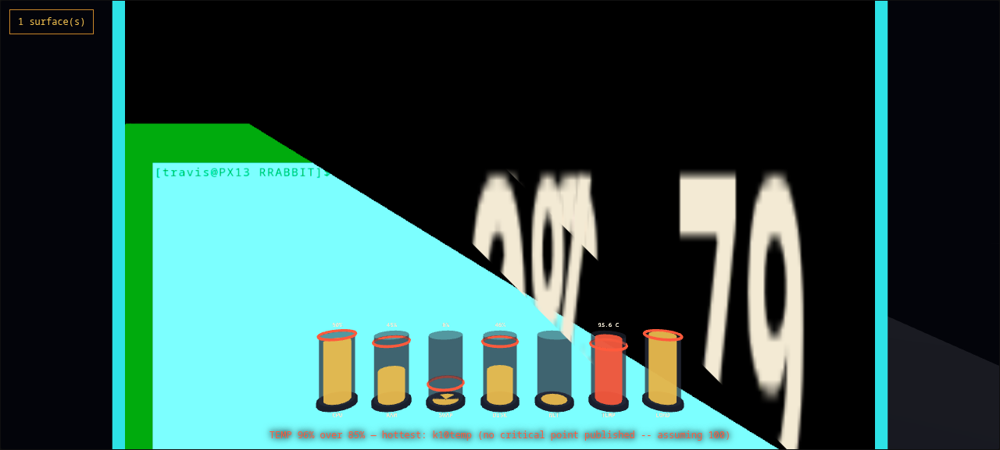

Data driven keeps the result. Compute driven ships the derivation.
The name is an argument, and it is not that data-driven work is irreproducible. It often is reproducible — when the inputs, the transformations, the environment and the method have all been preserved with enough discipline. The difference is where that discipline lives: alongside the artifact, or inside it.
Data driven
- The result is the thing that travels.
- Reproducing it means reassembling its context by hand.
- That context lives outside the artifact — a README, a lockfile, a methods section, somebody's memory.
- When any of that rots, the number outlives its derivation.
- Reproducibility is achievable, and it is a practice.
Compute driven
- The derivation is the thing that travels.
- Canonical input, executable semantics, a derived identity and its provenance ride inside the artifact.
- Meaning is computed, never assigned — the identity is a hash.
- The derivation travels with the artifact rather than as assembly instructions beside it.
- Reproducibility is a property, not a practice.
So, stated as a test rather than a mood:
And the limit, because this is the sort of page that has to state it: re-derivation proves fidelity, not correctness. A wrong computation re-runs perfectly and is still wrong. Deriving the same identity tells you that you got what we got — it does not tell you that either of us should have wanted it. What it removes is the argument about what happened, which is the argument that usually eats the room.
A road, and a window. All the way down.
This is a WRL world — the language the stack writes meaning in. Square brackets are places. Arrows are roads between them. It is a map, and the map is executable.
Now look at the shell in the picture at the top of this page: windows standing as signs along a road you drive through. That is the same drawing. Not a metaphor borrowed for the marketing — the language, the runtime, the evidence and the interface are all the same two things.
sem-…)
The shell's own documentation puts it better than we can: “One likes going; the other likes being gone to.” Neither half is worth much alone — a hash without a film is a claim, and a film without a hash is a story.
Six rules. We break them in public or not at all.
These are not aspirations. Each one is here because it changed something we shipped — usually by making a page say something less flattering than the draft did.
- Re-derive, don't trust. If a claim cannot be computed again by someone who does not work here, it is a rumour with good typography.
- Say what is not built. Every status on every page is measured, sourced, or marked not built. The absent things are listed beside the present ones, at the size they actually are.
- Subtraction is the feature. 364 MB is not an optimisation. It is 200 MB of test suites, every debug package and every 32-bit library, decided against.
- A claim carries its date and its machine. “It works” is not a result. “Measured on a pristine image, 10 August 2026, and here is the string it printed” is one.
- Quote the unflattering half. The verifier costs 14 MB. The interpreter it needs costs another 250. A page that mentions only the first number is lying with a true fact.
- Never fake a success. A control that reports something it did not do is worse than one that plainly fails. We deleted our own before writing this down.
Two images. Pick the one you need.
Server
sshd, cron, a serial console. The whole operating system and nothing arranged around a screen.
Server + verifier
The same system carrying TRVM and trvs — a runtime and a
verifier that turn a run into a bundle somebody else can replay. The
extra weight is almost entirely the python interpreter.
Desktop
X.org, icewm, a vertical cockpit panel, Firefox, and the Travel & RRABBIT road shell in the picture above. Too large for the release host, so this one is a build rather than a download.
Three ways in. One of them is proven.
Every T&R boot on record is a virtual machine. Writing the image to real hardware should work — it is a GPT image with a UEFI partition — but nobody has done it, so those two routes are marked untested rather than supported.
This is the route we run constantly. The image boots to a serial
console, so you can drive and log it without a display. Needs UEFI
firmware — the path below is Arch; Debian uses
/usr/share/OVMF/OVMF_CODE.fd.
Prefer something that manages instances for you? PARKVPS runs these images rootless and daemonless, one process per guest, every disk a copy-on-write overlay on one shared image.
Then boot the machine from it with UEFI enabled. If you try this, we would genuinely like to know what happened — it is the fastest way this row stops saying untested.
The root filesystem grows to fill the disk on first boot, so a 364 MB
image becomes a whole drive without further work. The image finds its
root by GPT label rather than device name, which is why it does not
care whether it lands on vtbd0, ada0 or
nvd0.
Subtraction, done once, at build time.
FreeBSD's own cloud image enables firstboot_pkg_upgrade, so every
instance re-downloads its base packages the first time it starts — forever. We
patch at build time instead, and leave out the ~200 MB of test suites, every
debug package and every 32-bit library a server guest will never open.
Six parts. Not all of them are software.
T&R is the distribution and the shell; the five beneath it are the reason the distribution exists. They are not the same kind of thing, so each card says what role it plays and where it actually is — because "part of the stack" and "in the image you just downloaded" are different claims. ComputeDriven is not a seventh box. It is the discipline the six are held to.
trvs — seals a run into a bundle somebody else can
replay, and derives the same identity when they do. Boot the
626 MB image and type trvs doctor; it answers
status ready having set nothing up.



The parts we have not earned yet.
A download page that only lists wins is asking you to install on faith. These are the holes at the size they actually are.
Never booted on real hardware
Every boot on record is QEMU/KVM. USB and internal-disk installs should work and have not been demonstrated by anyone.
No installer
You write an image to a disk. There is no partitioner, no dual-boot path and no way to keep what was already there.
The console is the front door
The serial console is marked secure and root has no password. Fine for a disposable local VM, wrong the moment one listens on a real address.
The desktop is not downloadable
At ~5.2 GB it exceeds the release host's per-file limit, so the most visual part of this page is the part you have to build yourself.
One implementation
The verifier's identity claim rests on a single codebase agreeing with itself across two operating systems — not on two implementations agreeing.
Nobody else has run it
These are the first published images. Every measurement on this page comes from our machines, which is the weakest kind of evidence there is. That one is yours to close.
Be the machine that isn't ours.
Every number on this page was measured here, on hardware we own. No amount of care fixes that — a claim only becomes a result when somebody else's machine derives it too. So joining ComputeDriven is not a subscription. It is running an image and saying what happened.
What a boot report is
- The machine. CPU and firmware, or the hypervisor and its version — enough that somebody could try the same thing.
- The image, and its sha256. Whether the sum you got matches the one quoted above.
- Whether it reached a login prompt. Yes, no, or yes-but.
-
What
trvs doctorprinted, verbatim. On 0.3 it should answerstatus readyhaving set nothing up. Iftrvs idhands you a differentsem-identity than ours, that is the most interesting thing you could possibly send us.
A boot that fails is the better report. Success confirms what we already published; a failure is a measurement we do not have. USB and bare metal have never been booted by anyone — the first person to try is doing the experiment, whichever way it goes.
There is no mailing list, and this page will not pretend there is one. If you only want to know when an image ships, watch the repository for releases, or take the feed. Anything that is not a boot report goes here instead: